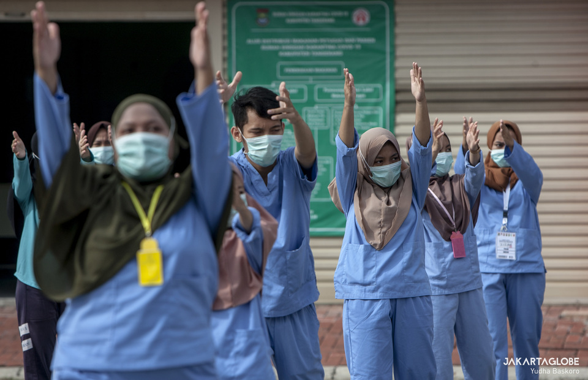

Jakarta Globe
May 30, 2020
0 Commets
Indonesia Sees Record 523 Recoveries from Coronavirus in a Day
Jakarta. The number of patients recovering from coronavirus in Indonesia hit a new record of 523 on Saturday, almost double the previous record of 285 on May 15. Just above 7,000 patients have recovered from the disease so far. Jakarta reported 266 more patients who have recovered from the respiratory illness. Earlier this week, the National Covid-19 Task Force said occupancy rate at hospitals designated for coronavirus patients in Jakarta has dropped below 50 percent, as the epicenter is moving to East Java.